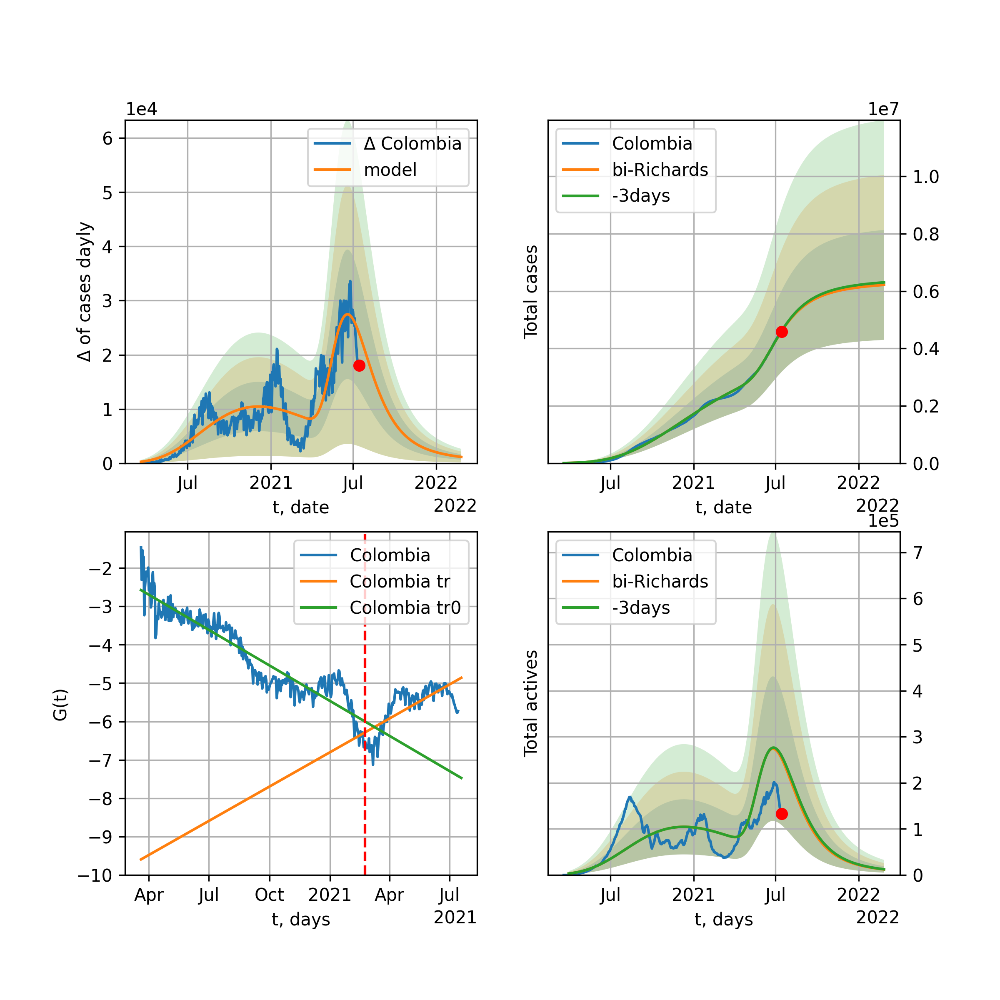

Multi-logistic model of COVID-19 dynamics
Model, code, results
Project maintained by algmaknick Hosted on GitHub Pages — Theme by mattgraham
World

World data at: 2020-07-13
+3 day model MAPE: 0.006749
model: bi-Richards
coeffs: [ 2.61693620e+07 9.86096039e-01 -6.30589749e+01 2.10308096e-02]
rational stdev: 0.075786
forecast at the end of period: +343 days
deltaDaycases: 528
total cases: 31246684 ± 2368046
total death: 1358357 ± 308831
bi-Richards approximation splitting point: 50
trend coefficient of determination: 0.844815
intercept: -2.366724
slope: -0.033799
trend coefficient of determination: 0.377105
intercept: -3.969872
slope: -0.004239
European Union

European Union data at: 2020-07-13
+3 day model MAPE: 0.002244
model: bi-Richards
coeffs: [ 4.10538357e+05 2.63246261e+00 -7.67234444e+01 9.87483186e-03]
rational stdev: 0.541981
forecast at the end of period: +117 days
deltaDaycases: 249
total cases: 1483313 ± 803927
total death: 148959 ± 242198
bi-Richards approximation splitting point: 83
trend coefficient of determination: 0.943542
intercept: -1.119129
slope: -0.057453
trend coefficient of determination: 0.013748
intercept: -5.638313
slope: -0.002432
Brazil

Brazil data at: 2020-07-13
+3 day model MAPE: 0.002063
model: Richards
coeffs: [ 5.34762044e+06 3.21885032e-01 -3.05496641e+00 6.27060933e-02]
rational stdev: 0.352450
forecast at the end of period: +383 days
deltaDaycases: 51
total cases: 5345118 ± 1883887
total death: 206451 ± 218291
trend coefficient of determination: 0.267494
intercept: -2.470505
slope: -0.016126
Russia

Russia data at: 2020-07-12
+3 day model MAPE: 0.008342
model: Richards
coeffs: [ 8.73705415e+05 2.85063782e+00 -7.53557547e+01 1.11851812e-02]
S.Korea scenario coeffs: [0.36242246, 2.56241634, 1.84890887, 0.13324732]
rational stdev: 0.243355
forecast at the end of period: +524 days
deltaDaycases: 418
total cases: 1149352 ± 279700
total death: 17916 ± 13079
trend coefficient of determination: 0.942416
intercept: -1.359559
slope: -0.030126
USA

USA data at: 2020-07-13
+3 day model MAPE: 0.000802
model: bi-Richards
coeffs: [1.24050812e+07 6.73420746e-01 2.40292201e+00 3.29007451e-02]
rational stdev: 0.271781
forecast at the end of period: +327 days
deltaDaycases: 444
total cases: 14500690 ± 3941008
total death: 576142 ± 469752
bi-Richards approximation splitting point: 90
trend coefficient of determination: 0.944850
intercept: -1.537704
slope: -0.044064
trend coefficient of determination: 0.790548
intercept: -6.930665
slope: 0.020351
Spain

Spain data at: 2020-07-13
+3 day model MAPE: 0.005713
model: bi-Richards
coeffs: [ 7.63269481e+04 2.44915244e+00 -1.72498719e+02 6.02109053e-03]
rational stdev: 0.196255
forecast at the end of period: +299 days
deltaDaycases: 25
total cases: 365176 ± 71667
total death: 34231 ± 20154
bi-Richards approximation splitting point: 90
trend coefficient of determination: 0.953075
intercept: -0.708338
slope: -0.060638
trend coefficient of determination: 0.035035
intercept: -7.360043
slope: 0.005509
Italy

Italy data at: 2020-07-13
+3 day model MAPE: 0.001084
model: Richards
coeffs: [ 2.39904780e+05 7.38422771e+00 -5.84848823e+01 7.75772638e-03]
rational stdev: 0.102826
forecast at the end of period: +5 days
deltaDaycases: 23
total cases: 239505 ± 24627
total death: 34431 ± 10621
trend coefficient of determination: 0.958598
intercept: -1.425125
slope: -0.048247
United Kingdom

United Kingdom data at: 2020-07-13
+3 day model MAPE: 0.001702
model: Richards
coeffs: [ 2.93413501e+05 4.23390653e+00 -6.87274300e+01 1.04743307e-02]
S.Korea scenario coeffs: [0.36242246, 2.56241634, 1.84890887, 0.13324732]
rational stdev: 0.162216
forecast at the end of period: +313 days
deltaDaycases: 212
total cases: 384646 ± 62395
total death: 59433 ± 28922
trend coefficient of determination: 0.976442
intercept: -1.497363
slope: -0.042012
France

France data at: 2020-07-13
+3 day model MAPE: 0.003965
model: bi-Richards
coeffs: [ 4.45388997e+04 2.60747369e+00 -3.08291926e+01 1.31172356e-02]
rational stdev: 0.090478
forecast at the end of period: +75 days
deltaDaycases: 40
total cases: 182903 ± 16548
total death: 31862 ± 8648
bi-Richards approximation splitting point: 86
trend coefficient of determination: 0.904766
intercept: -0.856380
slope: -0.068988
trend coefficient of determination: 0.005321
intercept: -6.303382
slope: 0.002843
Germany

Germany data at: 2020-07-13
+3 day model MAPE: 0.000322
model: bi-Richards
coeffs: [ 3.07549954e+04 5.36600367e+00 -3.57192272e+01 7.10286086e-03]
rational stdev: 0.124231
forecast at the end of period: +19 days
deltaDaycases: 179
total cases: 204780 ± 25440
total death: 9337 ± 3479
bi-Richards approximation splitting point: 94
trend coefficient of determination: 0.950729
intercept: -1.430435
slope: -0.061153
trend coefficient of determination: 0.016321
intercept: -5.647194
slope: -0.006308
Turkey

Turkey data at: 2020-07-13
+3 day model MAPE: 0.001416
model: bi-Richards
coeffs: [ 8.57783251e+04 2.15345706e+00 -2.14982495e+00 1.84423091e-02]
rational stdev: 0.188134
forecast at the end of period: +89 days
deltaDaycases: 47
total cases: 245825 ± 46248
total death: 6182 ± 3489
bi-Richards approximation splitting point: 75
trend coefficient of determination: 0.786716
intercept: -1.018061
slope: -0.058964
trend coefficient of determination: 0.049130
intercept: -5.060097
slope: -0.002634
Iran

Iran data at: 2020-07-13
+3 day model MAPE: 0.006892
model: bi-Richards
coeffs: [ 2.17569491e+05 3.47932363e+00 -2.96880637e+01 9.80075474e-03]
rational stdev: 0.251677
forecast at the end of period: +187 days
deltaDaycases: 4
total cases: 319919 ± 80516
total death: 16056 ± 12122
bi-Richards approximation splitting point: 75
trend coefficient of determination: 0.949238
intercept: -0.904686
slope: -0.054983
trend coefficient of determination: 0.591904
intercept: -3.514673
slope: -0.008360
Canada

Canada data at: 2020-07-13
+3 day model MAPE: 0.006764
model: bi-Richards
coeffs: [ 1.41209581e+05 1.13190915e+00 -2.81219270e+02 7.49262550e-03]
rational stdev: 0.193885
forecast at the end of period: +616 days
deltaDaycases: 26
total cases: 246483 ± 47789
total death: 20032 ± 11651
bi-Richards approximation splitting point: 104
trend coefficient of determination: 0.931375
intercept: -1.297817
slope: -0.039189
trend coefficient of determination: 0.049091
intercept: -4.672206
slope: -0.010550
South Africa

South Africa data at: 2020-07-13
+3 day model MAPE: 0.008238
model: bi-Richards
coeffs: [2.94039568e+07 6.76001281e-02 1.69809833e+02 2.57777226e-01]
rational stdev: 0.295920
forecast at the end of period: +411 days
deltaDaycases: 3546
total cases: 29202776 ± 8641684
total death: 423334 ± 375818
bi-Richards approximation splitting point: 30
trend coefficient of determination: 0.637437
intercept: -1.370232
slope: -0.134664
trend coefficient of determination: 0.670129
intercept: -4.557446
slope: -0.013006
Belgium

Belgium data at: 2020-07-13
+3 day model MAPE: 0.002267
model: bi-Richards
coeffs: [5.01095132e+03 5.17587701e+00 4.17240188e-01 8.63249254e-03]
rational stdev: 0.537598
forecast at the end of period: +68 days
deltaDaycases: 5
total cases: 64683 ± 34773
total death: 10090 ± 16273
bi-Richards approximation splitting point: 105
trend coefficient of determination: 0.958286
intercept: -1.280887
slope: -0.055373
trend coefficient of determination: 0.168013
intercept: -18.293902
slope: 0.096689
Peru

Peru data at: 2020-07-13
+3 day model MAPE: 0.012732
model: bi-Richards
coeffs: [ 1.21325795e+05 5.66562404e+00 -1.10311158e+01 8.35967383e-03]
rational stdev: 0.166577
forecast at the end of period: +173 days
deltaDaycases: 1
total cases: 375159 ± 62492
total death: 13698 ± 6845
bi-Richards approximation splitting point: 70
trend coefficient of determination: 0.546436
intercept: -1.445876
slope: -0.026999
trend coefficient of determination: 0.843065
intercept: -1.201911
slope: -0.028865
Netherlands

Netherlands data at: 2020-07-13
+3 day model MAPE: 0.001530
model: bi-Richards
coeffs: [4.88556811e+03 8.22949010e+00 2.33380154e+01 9.41530230e-03]
rational stdev: 0.030603
forecast at the end of period: +5 days
deltaDaycases: 18
total cases: 50979 ± 1560
total death: 6123 ± 562
bi-Richards approximation splitting point: 75
trend coefficient of determination: 0.960296
intercept: -1.284786
slope: -0.062416
trend coefficient of determination: 0.247738
intercept: -1.672858
slope: -0.048140
India

India data at: 2020-07-13
+3 day model MAPE: 0.010735
model: Richards
coeffs: [ 1.79360935e+07 2.37589373e-01 -5.40495341e+01 4.49967120e-02]
rational stdev: 0.378591
forecast at the end of period: +593 days
deltaDaycases: 1085
total cases: 17834841 ± 6752113
total death: 466225 ± 529526
trend coefficient of determination: 0.734233
intercept: -1.984937
slope: -0.017785
Switzerland

Switzerland data at: 2020-07-13
+3 day model MAPE: 0.002456
model: bi-Richards
coeffs: [3.22115615e+05 1.16642383e-01 1.14748147e+02 1.30949950e-01]
rational stdev: 0.291685
forecast at the end of period: +523 days
deltaDaycases: 11
total cases: 352078 ± 102695
total death: 21031 ± 18403
bi-Richards approximation splitting point: 96
trend coefficient of determination: 0.953542
intercept: -2.275985
slope: -0.081910
trend coefficient of determination: 0.543695
intercept: -14.077753
slope: 0.055276
Ecuador

Ecuador data at: 2020-07-13
+3 day model MAPE: 0.023938
model: Richards
coeffs: [ 8.72481964e+04 1.53832012e+00 -1.49869119e+02 1.37775409e-02]
S.Korea scenario coeffs: [0.36242246, 2.56241634, 1.84890887, 0.13324732]
rational stdev: 0.182282
forecast at the end of period: +593 days
deltaDaycases: 66
total cases: 107157 ± 19532
total death: 7925 ± 4333
trend coefficient of determination: 0.140903
intercept: -3.023448
slope: -0.025176
Portugal

Portugal data at: 2020-07-13
+3 day model MAPE: 0.004654
model: bi-Richards
coeffs: [ 3.42585502e+04 1.77887609e+00 -5.43953751e+01 1.54108236e-02]
rational stdev: 0.049379
forecast at the end of period: +173 days
deltaDaycases: 5
total cases: 62234 ± 3073
total death: 2209 ± 327
bi-Richards approximation splitting point: 61
trend coefficient of determination: 0.904034
intercept: -1.181160
slope: -0.070106
trend coefficient of determination: 0.000540
intercept: -5.002123
slope: 0.000285
Saudi Arabia

Saudi Arabia data at: 2020-07-13
+3 day model MAPE: 0.006156
model: bi-Richards
coeffs: [1.47790821e+05 1.62411690e-01 8.46467170e+01 4.54028181e-01]
rational stdev: 0.163709
forecast at the end of period: +82 days
deltaDaycases: 19
total cases: 279251 ± 45715
total death: 2664 ± 1308
bi-Richards approximation splitting point: 75
trend coefficient of determination: 0.948891
intercept: -4.586028
slope: -0.058734
trend coefficient of determination: 0.758648
intercept: -6.556099
slope: -0.027410
Sweden

Sweden data at: 2020-07-13
+3 day model MAPE: 0.003472
model: bi-Richards
coeffs: [3.07407550e+04 2.26048966e-01 9.68660231e+01 4.39219571e-01]
rational stdev: 0.229056
forecast at the end of period: +68 days
deltaDaycases: 14
total cases: 81954 ± 18772
total death: 5983 ± 4111
bi-Richards approximation splitting point: 90
trend coefficient of determination: 0.877201
intercept: -3.383921
slope: -0.071078
trend coefficient of determination: 0.503218
intercept: -4.210920
slope: -0.043736
Pakistan

Pakistan data at: 2020-07-13
+3 day model MAPE: 0.012444
model: bi-Richards
coeffs: [2.67367180e+05 5.53767459e-02 1.07537981e+02 1.71131855e+00]
S.Korea scenario coeffs: [0.36242246, 2.56241634, 1.84890887, 0.13324732]
rational stdev: 0.372854
forecast at the end of period: +208 days
deltaDaycases: 150
total cases: 361190 ± 134671
total death: 7576 ± 8474
bi-Richards approximation splitting point: 25
trend coefficient of determination: 0.852461
intercept: -3.494858
slope: -0.383474
trend coefficient of determination: 0.974712
intercept: -12.917869
slope: -0.100532
Ireland

Ireland data at: 2020-07-13
+3 day model MAPE: 0.000767
model: Richards
coeffs: [2.53743701e+04 2.18048627e-01 2.02892946e+01 4.23496763e-01]
rational stdev: 0.151933
forecast at the end of period: +75 days
deltaDaycases: 0
total cases: 25374 ± 3855
total death: 1728 ± 787
trend coefficient of determination: 0.936273
intercept: -3.836620
slope: -0.078143
Mexico

Mexico data at: 2020-07-13
+3 day model MAPE: 0.002427
model: Richards
coeffs: [ 9.78977382e+05 3.29944405e-01 -4.98944932e+01 5.26121292e-02]
S.Korea scenario coeffs: [0.36242246, 2.56241634, 1.84890887, 0.13324732]
rational stdev: 0.215515
forecast at the end of period: +1083 days
deltaDaycases: 138
total cases: 1309616 ± 282242
total death: 152674 ± 98710
trend coefficient of determination: 0.921637
intercept: -2.230859
slope: -0.021811
Singapore

Singapore data at: 2020-07-12
+3 day model MAPE: 0.002817
model: bi-Richards
coeffs: [ 3.93684703e+04 4.60172255e+00 -2.94651124e+01 8.24504922e-03]
rational stdev: 0.253857
forecast at the end of period: +104 days
deltaDaycases: 2
total cases: 48610 ± 12340
total death: 27 ± 20
bi-Richards approximation splitting point: 60
trend coefficient of determination: 0.125499
intercept: -2.319879
slope: -0.021639
trend coefficient of determination: 0.637432
intercept: 0.369064
slope: -0.038459
Chile

Chile data at: 2020-07-13
+3 day model MAPE: 0.007822
model: Richards
coeffs: [3.35349423e+05 6.63050905e-02 5.60209198e+01 1.20279476e+00]
S.Korea scenario coeffs: [0.36242246, 2.56241634, 1.84890887, 0.13324732]
rational stdev: 0.135160
forecast at the end of period: +145 days
deltaDaycases: 509
total cases: 436240 ± 58962
total death: 9646 ± 3911
trend coefficient of determination: 0.984018
intercept: -13.519517
slope: -0.071116
Israel

Israel data at: 2020-07-13
+3 day model MAPE: 0.006455
model: bi-Richards
coeffs: [5.64923198e+05 1.76768463e-01 9.94026930e+01 1.60132993e-01]
rational stdev: 0.120122
forecast at the end of period: +313 days
deltaDaycases: 9
total cases: 581643 ± 69868
total death: 5224 ± 1882
bi-Richards approximation splitting point: 70
trend coefficient of determination: 0.946557
intercept: -2.062673
slope: -0.099871
trend coefficient of determination: 0.724717
intercept: -12.136038
slope: 0.062620
Austria

Austria data at: 2020-07-12
+3 day model MAPE: 0.013334
model: bi-Richards
coeffs: [ 6.60974617e+03 3.03541286e+00 -1.14026967e+02 7.27553523e-03]
rational stdev: 1.146499
forecast at the end of period: +76 days
deltaDaycases: 19
total cases: 21392 ± 24526
total death: 801 ± 2755
bi-Richards approximation splitting point: 83
trend coefficient of determination: 0.868019
intercept: -1.579512
slope: -0.070846
trend coefficient of determination: 0.486810
intercept: -11.319381
slope: 0.049671
Belarus

Belarus data at: 2020-07-13
+3 day model MAPE: 0.003874
model: Richards
coeffs: [ 7.35530760e+04 1.79235298e+00 -6.59317739e+01 2.10258593e-02]
S.Korea scenario coeffs: [0.36242246, 2.56241634, 1.84890887, 0.13324732]
rational stdev: 0.148491
forecast at the end of period: +453 days
deltaDaycases: 20
total cases: 98567 ± 14636
total death: 708 ± 315
trend coefficient of determination: 0.970521
intercept: -1.700987
slope: -0.041342
Japan

Japan data at: 2020-07-13
+3 day model MAPE: 0.024937
model: bi-Richards
coeffs: [6.35993538e+05 5.13024193e-02 2.58120266e+02 3.10429297e+00]
rational stdev: 0.557833
forecast at the end of period: +145 days
deltaDaycases: 9
total cases: 652045 ± 363732
total death: 29280 ± 49000
bi-Richards approximation splitting point: 115
trend coefficient of determination: 0.934135
intercept: -10.486714
slope: -0.239879
trend coefficient of determination: 0.527487
intercept: -39.333162
slope: 0.023507
China

China data at: 2020-07-13
+3 day model MAPE: 0.000470
model: bi-Richards
coeffs: [ 1.52393844e+03 2.38951559e+01 -4.00623626e+00 2.98343573e-03]
rational stdev: 0.092744
forecast at the end of period: +5 days
deltaDaycases: 0
total cases: 83295 ± 7725
total death: 4616 ± 1284
bi-Richards approximation splitting point: 110
trend coefficient of determination: 0.821000
intercept: -1.983276
slope: -0.082685
trend coefficient of determination: 0.084296
intercept: -12.481067
slope: 0.020484
Qatar

Qatar data at: 2020-07-13
+3 day model MAPE: 0.000516
model: Richards
coeffs: [1.11867027e+05 8.60328178e-02 4.78898028e+01 6.57204645e-01]
S.Korea scenario coeffs: [0.36242246, 2.56241634, 1.84890887, 0.13324732]
rational stdev: 0.128049
forecast at the end of period: +327 days
deltaDaycases: 12
total cases: 151755 ± 19432
total death: 217 ± 83
trend coefficient of determination: 0.976256
intercept: -6.885720
slope: -0.057834
Poland

Poland data at: 2020-07-12
+3 day model MAPE: 0.004955
model: bi-Richards
coeffs: [ 2.52543097e+04 2.58211768e+00 -2.04403762e+01 1.48754218e-02]
rational stdev: 0.108636
forecast at the end of period: +104 days
deltaDaycases: 5
total cases: 43964 ± 4776
total death: 1822 ± 593
bi-Richards approximation splitting point: 60
trend coefficient of determination: 0.715746
intercept: -1.175924
slope: -0.047839
trend coefficient of determination: 0.721419
intercept: -2.811030
slope: -0.017525
UAE

UAE data at: 2020-07-13
+3 day model MAPE: 0.015602
model: bi-Richards
coeffs: [ 2.93701080e+04 4.46181041e+00 -5.02513029e+01 9.33039823e-03]
rational stdev: 0.050708
forecast at the end of period: +103 days
deltaDaycases: 3
total cases: 59499 ± 3017
total death: 360 ± 54
bi-Richards approximation splitting point: 80
trend coefficient of determination: 0.914242
intercept: -1.958910
slope: -0.032677
trend coefficient of determination: 0.002169
intercept: -4.900958
slope: 0.000953
Romania

Romania data at: 2020-07-13
+3 day model MAPE: 0.010744
model: bi-Richards
coeffs: [4.38534919e+04 1.03007361e+00 1.75348396e+01 2.99383023e-02]
rational stdev: 0.145238
forecast at the end of period: +145 days
deltaDaycases: 20
total cases: 64493 ± 9366
total death: 3721 ± 1621
bi-Richards approximation splitting point: 87
trend coefficient of determination: 0.927961
intercept: -1.375859
slope: -0.046064
trend coefficient of determination: 0.401193
intercept: -6.468459
slope: 0.015991
Panama

Panama data at: 2020-07-13
+3 day model MAPE: 0.015272
model: bi-Richards
coeffs: [ 7.82065236e+04 1.99612037e+00 -9.43700666e+00 1.67801181e-02]
rational stdev: 0.204843
forecast at the end of period: +145 days
deltaDaycases: 17
total cases: 91170 ± 18675
total death: 1801 ± 1106
bi-Richards approximation splitting point: 70
trend coefficient of determination: 0.874331
intercept: -1.294702
slope: -0.048453
trend coefficient of determination: 0.014138
intercept: -3.956732
slope: 0.001906
Ukraine

Ukraine data at: 2020-07-13
+3 day model MAPE: 0.002110
model: bi-Richards
coeffs: [4.24608938e+04 2.08898285e-01 7.75547378e+01 2.88635828e-01]
rational stdev: 0.154490
forecast at the end of period: +103 days
deltaDaycases: 2
total cases: 69735 ± 10773
total death: 1800 ± 834
bi-Richards approximation splitting point: 65
trend coefficient of determination: 0.826590
intercept: -2.564614
slope: -0.070253
trend coefficient of determination: 0.277873
intercept: -6.176530
slope: -0.008745
Indonesia

Indonesia data at: 2020-07-12
+3 day model MAPE: 0.021620
model: bi-Richards
coeffs: [ 2.09316300e+05 1.30637909e+00 -3.95761963e+01 1.77343878e-02]
rational stdev: 0.143653
forecast at the end of period: +202 days
deltaDaycases: 78
total cases: 253068 ± 36354
total death: 12055 ± 5195
bi-Richards approximation splitting point: 75
trend coefficient of determination: 0.798699
intercept: -1.999610
slope: -0.028936
trend coefficient of determination: 0.012684
intercept: -3.697983
slope: -0.002180
Bangladesh

Bangladesh data at: 2020-07-13
+3 day model MAPE: 0.373626
model: Richards
coeffs: [ 1.15736925e+02 6.45824667e+00 -4.20178539e+01 1.27654554e-02]
rational stdev: 0.371727
forecast at the end of period: +341 days
deltaDaycases: 0
total cases: 115 ± 43
total death: 1 ± 1
trend coefficient of determination: 0.020746
intercept: -4.180817
slope: 0.041430
South_Korea

South Korea data at: 2020-07-13
+3 day model MAPE: 0.000006
model: bi-Richards
coeffs: [ 7.84699975e+03 1.58878959e+00 -1.23121013e+02 1.09876175e-02]
rational stdev: 0.147771
forecast at the end of period: +103 days
deltaDaycases: 18
total cases: 17151 ± 2534
total death: 366 ± 162
bi-Richards approximation splitting point: 73
trend coefficient of determination: 0.865915
intercept: -1.357554
slope: -0.089580
trend coefficient of determination: 0.393327
intercept: -8.230578
slope: 0.019860
Moldova

Moldova data at: 2020-07-13
+3 day model MAPE: 0.007340
model: bi-Richards
coeffs: [1.55972797e+04 1.03670996e-01 9.08332884e+01 6.88748878e-01]
rational stdev: 0.170576
forecast at the end of period: +61 days
deltaDaycases: 2
total cases: 21865 ± 3729
total death: 730 ± 373
bi-Richards approximation splitting point: 60
trend coefficient of determination: 0.916143
intercept: -3.057776
slope: -0.122820
trend coefficient of determination: 0.616753
intercept: -7.687674
slope: -0.028138
Denmark

Denmark data at: 2020-07-13
+3 day model MAPE: 0.003107
model: bi-Richards
coeffs: [8.72795699e+02 2.27953219e-01 9.38031574e+01 4.40588216e-01]
rational stdev: 0.240023
forecast at the end of period: +54 days
deltaDaycases: 0
total cases: 13134 ± 3152
total death: 614 ± 442
bi-Richards approximation splitting point: 100
trend coefficient of determination: 0.900423
intercept: -4.041224
slope: -0.068471
trend coefficient of determination: 0.014010
intercept: -8.137818
slope: -0.025161
Serbia

Serbia data at: 2020-07-13
+3 day model MAPE: 0.031831
model: bi-Richards
coeffs: [1.02447119e+04 1.07339337e-01 1.04037750e+02 1.33138487e+00]
rational stdev: 0.264522
forecast at the end of period: +47 days
deltaDaycases: 0
total cases: 21900 ± 5793
total death: 475 ± 376
bi-Richards approximation splitting point: 90
trend coefficient of determination: 0.836480
intercept: -10.875703
slope: -0.100334
trend coefficient of determination: 0.185967
intercept: -18.832434
slope: 0.017564
Kuwait

Kuwait data at: 2020-07-13
+3 day model MAPE: 0.014445
model: bi-Richards
coeffs: [ 4.49432846e+04 3.68338640e+00 -5.61397919e+00 1.22411308e-02]
S.Korea scenario coeffs: [0.36242246, 2.56241634, 1.84890887, 0.13324732]
rational stdev: 0.095346
forecast at the end of period: +362 days
deltaDaycases: 60
total cases: 79057 ± 7537
total death: 559 ± 159
bi-Richards approximation splitting point: 90
trend coefficient of determination: 0.173673
intercept: -2.546857
slope: -0.009950
trend coefficient of determination: 0.115263
intercept: -3.641006
slope: -0.006611
Philippines

Philippines data at: 2020-07-13
+3 day model MAPE: 0.014844
model: bi-Richards
coeffs: [ 6.56541612e+05 6.07282887e-01 -9.46686593e+01 2.19336909e-02]
rational stdev: 0.176695
forecast at the end of period: +383 days
deltaDaycases: 145
total cases: 657124 ± 116110
total death: 18432 ± 9770
bi-Richards approximation splitting point: 60
trend coefficient of determination: 0.660703
intercept: -1.541269
slope: -0.049600
trend coefficient of determination: 0.022266
intercept: -4.266052
slope: 0.003198
Norway

Norway data at: 2020-07-13
+3 day model MAPE: 0.000494
model: bi-Richards
coeffs: [6.93382936e+02 4.46422240e+00 2.48775819e+01 1.25729900e-02]
rational stdev: 0.154390
forecast at the end of period: +5 days
deltaDaycases: 5
total cases: 9024 ± 1393
total death: 254 ± 117
bi-Richards approximation splitting point: 105
trend coefficient of determination: 0.918503
intercept: -1.150520
slope: -0.061821
trend coefficient of determination: 0.099518
intercept: -3.503335
slope: -0.029218
Czechia

Czechia data at: 2020-07-13
+3 day model MAPE: 0.009053
model: bi-Richards
coeffs: [ 3.65325582e+04 6.42670894e-01 -9.56877775e+01 2.20928750e-02]
rational stdev: 0.730558
forecast at the end of period: +383 days
deltaDaycases: 4
total cases: 44214 ± 32301
total death: 1179 ± 2583
bi-Richards approximation splitting point: 61
trend coefficient of determination: 0.434137
intercept: -1.506911
slope: -0.055838
trend coefficient of determination: 0.111803
intercept: -6.045134
slope: 0.008122
Colombia

Colombia data at: 2020-07-13
+3 day model MAPE: 0.008434
model: bi-Richards
coeffs: [ 2.05247058e+06 3.28868940e-01 -4.43619361e+01 4.09763378e-02]
rational stdev: 0.192860
forecast at the end of period: +593 days
deltaDaycases: 26
total cases: 2055997 ± 396519
total death: 72696 ± 42060
bi-Richards approximation splitting point: 41
trend coefficient of determination: 0.764436
intercept: -1.120006
slope: -0.065870
trend coefficient of determination: 0.501389
intercept: -3.037341
slope: -0.006805
Australia

Australia data at: 2020-07-13
+3 day model MAPE: 0.074687
model: bi-Richards
coeffs: [ 1.96465269e+05 2.22666040e-01 -5.20070281e+02 1.80887772e-02]
rational stdev: 0.199472
forecast at the end of period: +1048 days
deltaDaycases: 45
total cases: 190286 ± 37956
total death: 2004 ± 1199
bi-Richards approximation splitting point: 45
trend coefficient of determination: 0.840571
intercept: -0.983148
slope: -0.100735
trend coefficient of determination: 0.358122
intercept: -8.371155
slope: 0.026541
Malaysia

Malaysia data at: 2020-07-13
+3 day model MAPE: 0.001153
model: bi-Richards
coeffs: [2.12463649e+03 1.38646665e-01 8.07401133e+01 8.95145307e-01]
S.Korea scenario coeffs: [0.36242246, 2.56241634, 1.84890887, 0.13324732]
rational stdev: 0.130784
forecast at the end of period: +5 days
deltaDaycases: 0
total cases: 8678 ± 1134
total death: 121 ± 47
bi-Richards approximation splitting point: 70
trend coefficient of determination: 0.790812
intercept: -5.317734
slope: -0.124444
trend coefficient of determination: 0.569393
intercept: -8.716107
slope: -0.053237
Dominican Republic

Dominican Republic data at: 2020-07-13
+3 day model MAPE: 0.011246
model: bi-Richards
coeffs: [2.05162307e+05 4.99380748e-01 8.17698267e+00 4.55813465e-02]
rational stdev: 0.099905
forecast at the end of period: +243 days
deltaDaycases: 44
total cases: 232463 ± 23224
total death: 4612 ± 1382
bi-Richards approximation splitting point: 80
trend coefficient of determination: 0.744231
intercept: -2.431975
slope: -0.029785
trend coefficient of determination: 0.017085
intercept: -4.660154
slope: 0.004114
Egypt

Egypt data at: 2020-07-13
+3 day model MAPE: 0.001594
model: Richards
coeffs: [9.57691358e+04 5.40125903e-02 9.26563108e+01 1.37428727e+00]
rational stdev: 0.225177
forecast at the end of period: +68 days
deltaDaycases: 7
total cases: 95670 ± 21542
total death: 4535 ± 3063
trend coefficient of determination: 0.961590
intercept: -10.227183
slope: -0.087131
Finland

Finland data at: 2020-07-13
+3 day model MAPE: 0.000345
model: bi-Richards
coeffs: [-2.98008647e+02 9.33079647e+00 9.74956302e+00 7.51509251e-03]
rational stdev: 0.130421
forecast at the end of period: +19 days
deltaDaycases: 1
total cases: 7341 ± 957
total death: 331 ± 129
bi-Richards approximation splitting point: 86
trend coefficient of determination: 0.875182
intercept: -1.477607
slope: -0.048671
trend coefficient of determination: 0.136796
intercept: -3.462231
slope: -0.034001
Morocco

Morocco data at: 2020-07-13
+3 day model MAPE: 0.008931
model: bi-Richards
coeffs: [8.22606251e+03 8.45315606e+00 5.33771466e+01 1.18239226e-02]
rational stdev: 0.062290
forecast at the end of period: +47 days
deltaDaycases: 3
total cases: 17803 ± 1108
total death: 284 ± 53
bi-Richards approximation splitting point: 75
trend coefficient of determination: 0.861150
intercept: -1.454994
slope: -0.047840
trend coefficient of determination: 0.250016
intercept: -7.080486
slope: 0.026717
Argentina

Argentina data at: 2020-07-13
+3 day model MAPE: 0.008784
model: bi-Richards
coeffs: [6.15161351e+05 9.20273146e-02 1.02843731e+02 2.64798749e-01]
rational stdev: 0.190724
forecast at the end of period: +453 days
deltaDaycases: 0
total cases: 617758 ± 117821
total death: 11384 ± 6513
bi-Richards approximation splitting point: 38
trend coefficient of determination: 0.195778
intercept: -2.126190
slope: -0.106504
trend coefficient of determination: 0.565517
intercept: -4.925834
slope: -0.010043
Algeria

Algeria data at: 2020-07-13
+3 day model MAPE: 0.025191
model: bi-Richards
coeffs: [7.11699379e+03 2.36533346e+01 7.13043738e+01 6.42254047e-03]
rational stdev: 0.176157
forecast at the end of period: +61 days
deltaDaycases: 23
total cases: 24803 ± 4369
total death: 1282 ± 677
bi-Richards approximation splitting point: 75
trend coefficient of determination: 0.667274
intercept: -2.110892
slope: -0.027464
trend coefficient of determination: 0.754822
intercept: -6.935572
slope: 0.028099
Luxembourg

Luxembourg data at: 2020-07-13
+3 day model MAPE: 0.003574
model: bi-Richards
coeffs: [5.00286018e+03 7.31440548e-02 1.40459489e+02 7.75696983e+00]
rational stdev: 0.157860
forecast at the end of period: +47 days
deltaDaycases: 0
total cases: 8930 ± 1409
total death: 200 ± 94
bi-Richards approximation splitting point: 87
trend coefficient of determination: 0.586015
intercept: -44.246448
slope: -0.425522
trend coefficient of determination: 0.443107
intercept: -76.022110
slope: 0.050034
Thailand

Thailand data at: 2020-07-13
+3 day model MAPE: 0.001826
model: bi-Richards
coeffs: [ 2.62098293e+02 8.12319398e+00 -6.71660121e+01 4.82659506e-03]
rational stdev: 0.067064
forecast at the end of period: +19 days
deltaDaycases: 0
total cases: 3233 ± 216
total death: 58 ± 11
bi-Richards approximation splitting point: 60
trend coefficient of determination: 0.843125
intercept: -1.229176
slope: -0.117466
trend coefficient of determination: 0.007518
intercept: -8.237245
slope: 0.007518
Hungary

Hungary data at: 2020-07-13
+3 day model MAPE: 0.023613
model: bi-Richards
coeffs: [3.77399569e+04 1.20689255e-01 1.61210696e+02 2.40542554e-01]
rational stdev: 0.402476
forecast at the end of period: +243 days
deltaDaycases: 12
total cases: 41498 ± 16702
total death: 5813 ± 7018
bi-Richards approximation splitting point: 110
trend coefficient of determination: 0.936635
intercept: -2.189791
slope: -0.063267
trend coefficient of determination: 0.144750
intercept: -15.631484
slope: 0.058563
Greece

Greece data at: 2020-07-13
+3 day model MAPE: 0.017178
model: bi-Richards
coeffs: [ 2.83994012e+03 1.74438842e+00 -2.13627691e+01 1.55014782e-02]
rational stdev: 0.122821
forecast at the end of period: +75 days
deltaDaycases: 10
total cases: 5329 ± 654
total death: 268 ± 98
bi-Richards approximation splitting point: 92
trend coefficient of determination: 0.844248
intercept: -1.245016
slope: -0.064406
trend coefficient of determination: 0.214178
intercept: -9.093496
slope: 0.032223
Iraq

Iraq data at: 2020-07-13
+3 day model MAPE: 0.010199
model: bi-Richards
coeffs: [ 1.74984990e+05 1.33096827e+00 -8.90069580e+00 2.73044336e-02]
rational stdev: 0.046901
forecast at the end of period: +145 days
deltaDaycases: 31
total cases: 181203 ± 8498
total death: 7385 ± 1039
bi-Richards approximation splitting point: 63
trend coefficient of determination: 0.027175
intercept: -3.763283
slope: 0.004996
trend coefficient of determination: 0.861138
intercept: -0.846703
slope: -0.029327
Croatia

Croatia data at: 2020-07-13
+3 day model MAPE: 0.034833
model: bi-Richards
coeffs: [2.71680247e+03 3.51417683e+00 5.57990890e+01 2.30705858e-02]
rational stdev: 0.044318
forecast at the end of period: +54 days
deltaDaycases: 1
total cases: 4936 ± 218
total death: 155 ± 20
bi-Richards approximation splitting point: 80
trend coefficient of determination: 0.903449
intercept: -1.184638
slope: -0.105677
trend coefficient of determination: 0.706575
intercept: -22.675996
slope: 0.174382
Iceland

Iceland data at: 2020-07-13
+3 day model MAPE: 0.000423
model: bi-Richards
coeffs: [2.50583259e+02 2.89438348e+00 4.45379130e+01 1.75385225e-02]
rational stdev: 0.072963
forecast at the end of period: +75 days
deltaDaycases: 0
total cases: 2052 ± 149
total death: 10 ± 2
bi-Richards approximation splitting point: 63
trend coefficient of determination: 0.827194
intercept: -0.392896
slope: -0.125881
trend coefficient of determination: 0.630619
intercept: -14.622314
slope: 0.064275
Estonia

Estonia data at: 2020-07-10
+3 day model MAPE: 0.002476
model: bi-Richards
coeffs: [2.46655322e+02 1.02688449e-01 7.58310271e+01 1.57561988e+00]
rational stdev: 0.092918
forecast at the end of period: +8 days
deltaDaycases: 0
total cases: 1996 ± 185
total death: 68 ± 18
bi-Richards approximation splitting point: 50
trend coefficient of determination: 0.880523
intercept: -10.082572
slope: -0.157797
trend coefficient of determination: 0.317738
intercept: -15.367360
slope: -0.037012
Bulgaria

Bulgaria data at: 2020-07-13
+3 day model MAPE: 0.023023
model: bi-Richards
coeffs: [1.15686183e+04 3.92088377e+00 1.43639194e+01 1.15299224e-02]
rational stdev: 0.102959
forecast at the end of period: +117 days
deltaDaycases: 2
total cases: 14983 ± 1542
total death: 558 ± 172
bi-Richards approximation splitting point: 71
trend coefficient of determination: 0.673968
intercept: -2.046060
slope: -0.038857
trend coefficient of determination: 0.404973
intercept: -7.185868
slope: 0.032449
New Zealand

New Zealand data at: 2020-07-13
+3 day model MAPE: 0.000311
model: bi-Richards
coeffs: [ 5.04640303e+02 1.34311774e+00 -1.55776471e+02 1.04996148e-02]
rational stdev: 0.033027
forecast at the end of period: +285 days
deltaDaycases: 0
total cases: 1976 ± 65
total death: 28 ± 2
bi-Richards approximation splitting point: 90
trend coefficient of determination: 0.914594
intercept: -0.918416
slope: -0.133728
trend coefficient of determination: 0.004019
intercept: -6.714555
slope: -0.006087
Slovenia

Slovenia data at: 2020-07-12
+3 day model MAPE: 0.003546
model: bi-Richards
coeffs: [6.89125111e+02 3.02941955e-01 1.06824499e+02 3.31047861e-01]
rational stdev: 0.165873
forecast at the end of period: +104 days
deltaDaycases: 0
total cases: 2181 ± 361
total death: 131 ± 65
bi-Richards approximation splitting point: 70
trend coefficient of determination: 0.916180
intercept: -2.384786
slope: -0.106389
trend coefficient of determination: 0.695132
intercept: -17.516489
slope: 0.085005
Slovakia

Slovakia data at: 2020-07-12
+3 day model MAPE: 0.011738
model: bi-Richards
coeffs: [1.34092168e+04 1.69278957e-01 9.86163794e+01 1.45182221e-01]
rational stdev: 0.194306
forecast at the end of period: +370 days
deltaDaycases: 0
total cases: 14908 ± 2896
total death: 219 ± 127
bi-Richards approximation splitting point: 85
trend coefficient of determination: 0.862488
intercept: -1.486282
slope: -0.090009
trend coefficient of determination: 0.316468
intercept: -14.951736
slope: 0.075372
Lithuania

Lithuania data at: 2020-07-12
+3 day model MAPE: 0.002253
model: bi-Richards
coeffs: [ 4.45993714e+02 4.22278780e+00 -3.41196964e+01 1.10008713e-02]
rational stdev: 0.133338
forecast at the end of period: +19 days
deltaDaycases: 0
total cases: 1881 ± 250
total death: 79 ± 31
bi-Richards approximation splitting point: 48
trend coefficient of determination: 0.872184
intercept: -0.891685
slope: -0.088731
trend coefficient of determination: 0.356880
intercept: -4.067756
slope: -0.021233
Latvia

Latvia data at: 2020-07-12
+3 day model MAPE: 0.018089
model: bi-Richards
coeffs: [ 1.00718414e+02 1.90192118e+00 -2.78523971e+01 1.89235912e-02]
rational stdev: 0.090717
forecast at the end of period: +69 days
deltaDaycases: 0
total cases: 1180 ± 107
total death: 30 ± 8
bi-Richards approximation splitting point: 85
trend coefficient of determination: 0.758597
intercept: -2.182061
slope: -0.058329
trend coefficient of determination: 0.109909
intercept: -12.766947
slope: 0.055368
Cyprus

Cyprus data at: 2020-07-13
+3 day model MAPE: 0.003550
model: bi-Richards
coeffs: [ 1.07660407e+02 9.31244578e+00 -1.75843674e+01 6.07481863e-03]
rational stdev: 0.103308
forecast at the end of period: +5 days
deltaDaycases: 0
total cases: 1012 ± 104
total death: 18 ± 5
bi-Richards approximation splitting point: 70
trend coefficient of determination: 0.728066
intercept: -1.360376
slope: -0.075036
trend coefficient of determination: 0.021373
intercept: -5.759860
slope: -0.011143
Malta

Malta data at: 2020-07-09
+3 day model MAPE: 0.001489
model: bi-Richards
coeffs: [2.09978534e+02 1.22034068e+01 1.97827481e+00 6.99535067e-03]
rational stdev: 0.182311
forecast at the end of period: +9 days
deltaDaycases: 0
total cases: 669 ± 122
total death: 8 ± 4
bi-Richards approximation splitting point: 50
trend coefficient of determination: 0.728733
intercept: -0.938204
slope: -0.094384
trend coefficient of determination: 0.478961
intercept: -1.842578
slope: -0.050028
Sri Lanka

Sri Lanka data at: 2020-07-13
+3 day model MAPE: 0.045229
model: bi-Richards
coeffs: [-1.61902923e+03 4.57303713e+00 4.28529744e+01 2.08774216e-02]
rational stdev: 0.096510
forecast at the end of period: +453 days
deltaDaycases: 0
total cases: 13065 ± 1260
total death: 54 ± 15
bi-Richards approximation splitting point: 88
trend coefficient of determination: 0.088189
intercept: -3.366516
slope: -0.016450
trend coefficient of determination: 0.225966
intercept: -16.684270
slope: 0.107195
References
- Worldometers COVID-19 Coronavirus Pandemic
- Su COVID-19 susijusi gyventojų ir verslo statistika
- Bi-logistic growth
- Least squares
- scikit-learn
- scipy.org
- European Centre for Disease Prevention and Control An agency of the European Union
- Aaron Miller, Mac Josh Reandelar, Kimberly Fasciglione, Violeta Roumenova, Yan Li, Gonzalo H Otazu, Correlation between universal BCG vaccination policy and reduced morbidity and mortality for COVID-19: an epidemiological study, https://doi.org/10.1101/2020.03.24.20042937
- c19.se